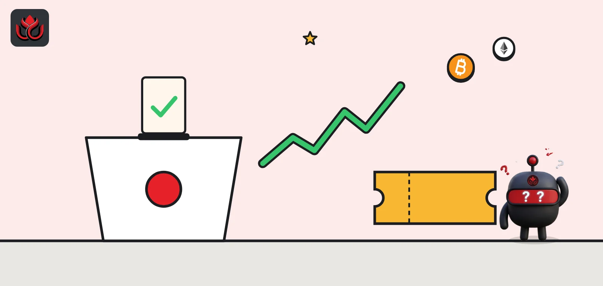
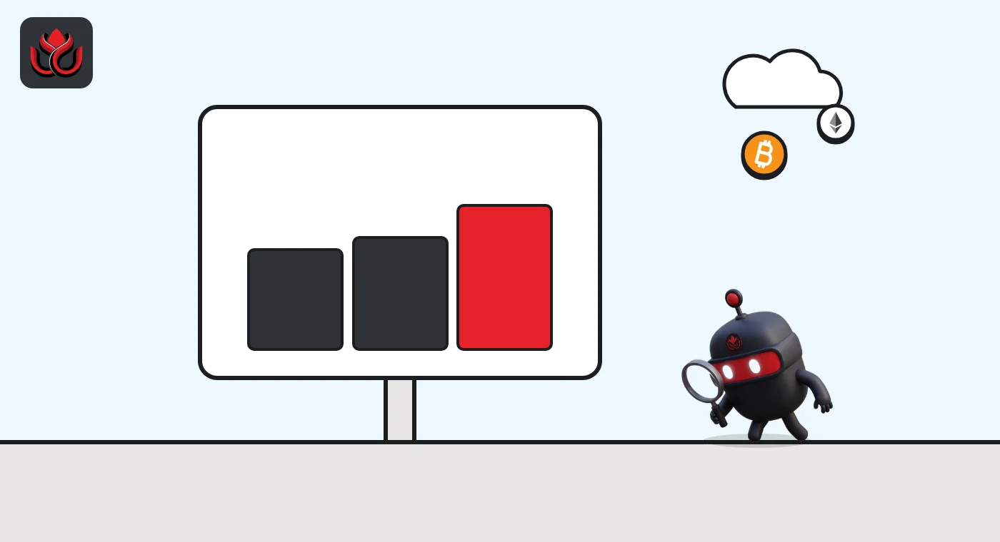
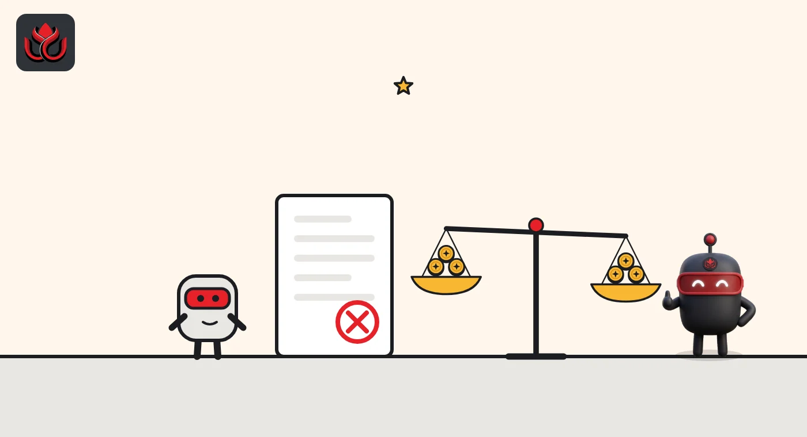

Kalshi prices a Democratic sweep at a record 70%. Did a fake pollster move the odds?
Two days before the November 3 vote, Kalshi's market priced Democrats winning both chambers at 70%, up more than 9 points in a month. Ten days earlier, Kalshi had to explain why a fabricated pollster barely moved its election markets.

Key points
- On November 1, 2026, Kalshi's balance-of-power market priced a Democratic sweep of Congress at 70%, which Kalshi called a record high.
- Kalshi priced Democrats at 93.2% to win the House and 71% to win the Senate, up from 90% and 62% on October 15.
- Kalshi said on October 22 that 14 of 15 polls from Wedgewood, a pollster that admitted it was fabricated, did not materially move its prices.
What traders are pricing
Americans vote on Tuesday, November 3, 2026, for all 435 House seats, 35 Senate seats (33 regular races and 2 special elections) and 36 governors, according to Kalshi's election guide. Kalshi is a prediction market regulated by the Commodity Futures Trading Commission. Traders buy contracts that pay $1 if an outcome happens and $0 if not, so a price of 70 cents is read as a 70% chance.
On November 1, Kalshi reported that its Congress balance-of-power market priced a Democratic sweep of both chambers at 70%, a record and more than 9 points higher than a month earlier. A Democratic House with a Republican Senate stood at 27% and a Republican sweep at 6%. Separate markets priced Democrats at 93.2% to win the House and 71% to win the Senate. Each outcome trades on its own, so the three prices add up to 103% rather than exactly 100%.
These are prices set by traders with money at stake. They are not polls and not forecasts by Kalshi, and they can be wrong.
How prices moved since mid-October
On October 15, Kalshi's guide put Democrats at 90% for the House and 62% for the Senate, with traders projecting 231 Democratic House seats. By October 29, Kalshi's seat markets projected about 240 House seats and 52 Senate seats for Democrats. A 52-seat result would give Democrats a majority in the 100-seat chamber.
Kalshi prices for Democratic control, October 15 vs. November 1, 2026
% implied chance
Source: Kalshi News, October 15 and November 1, 2026. Market prices, not probabilities set by Kalshi.

The Senate races traders are watching
Control of the Senate is the closer call, so single races matter. Kalshi's October 29 forecast post listed seven competitive Senate contests: Ohio, Texas, Michigan, Iowa, Maine, Alaska and Kansas, and said six of the seven competitive races are in states Donald Trump won in 2024. Kalshi's November 1 post said Democrats led in the Texas, Michigan, Maine and Ohio Senate markets.
Two Kalshi posts on November 1 tracked single races. In Kansas, Kalshi said traders priced Democrat Adam Hamilton at 53% against Republican incumbent Roger Marshall, after a peak of 54%. In Michigan, Kalshi said Democratic nominee Abdul El-Sayed fell from about 76% to 68% in a day after Representative Haley Stevens, the Democrat he narrowly beat in the August primary, endorsed Republican nominee Mike Rogers. Kalshi said El-Sayed was back at 70% just before its post went out. Several of these races sit near 50%, which in market terms means traders see them as close to a coin flip.
The fake pollster test
On October 20, a firm called Wedgewood Polls called itself a "fabricated polling firm" set up to expose weak spots in the polling industry. Two days later, Kalshi published a review of what Wedgewood's 15 polls did to its markets.
Kalshi said only one poll moved prices in a material way. A July 21, 2026, poll of the Wisconsin Democratic primary for governor showed Francesca Hong at 38%, Mandela Barnes at 30% and David Crowley at 9%. It briefly pushed Barnes's price up 4.5% and Crowley's up 6%. Kalshi said the other 14, including polls of the Michigan Democratic Senate primary and the Louisiana Republican Senate primary, did not materially move prices, and prices did not react when the fraud came out.
Social media users linked one Kalshi account to a person possibly tied to Wedgewood. Kalshi said that account was opened in February 2025, before Wedgewood existed, traded in 101 markets after Wedgewood's June 2026 launch and made $194.44 net across Wedgewood-related markets, losing on most of those trades. Kalshi said its investigation is ongoing and that confirmed rule breakers face punishment and possible referral to law enforcement.

How these contracts pay out
Kalshi's midterms explainer gives a worked example. Buying 100 Yes contracts at 40 cents costs $40 before fees. If the outcome happens, they pay $100. A trader can also sell early at the market price.
Election night will not settle the main markets. Kalshi says its House and Senate control contracts use party tests on February 1, 2027, unless an early call applies under the contract rules. So money in these markets could stay tied up for as long as three months.
LC Insight analysis
This section is our reading of the facts above, not a statement of fact.
- We think the Wedgewood review is the more important document for the industry. Kalshi is arguing that its prices absorb bad information quickly, which is the core claim prediction markets make to regulators. A one-time 4.5% to 6% move on a fake poll is small, but it shows that fake inputs can reach prices.
- A 70% price is not a call. Traders priced a Republican sweep at 6%, and markets have missed before. Readers should treat these numbers as one signal next to official results, not a replacement.
- The February 1, 2027, settlement date matters for traders who expect a quick payout on Wednesday morning. Contract rules, not headlines, decide when money moves.
What's next
- Official results on November 3 and how fast Kalshi prices react
- Any disputes over early calls under Kalshi's contract rules
- Results of Kalshi's Wedgewood trading investigation
- CFTC and state actions on election contracts after the vote
Disclaimer. This article is based on public information and the sources listed below as of the update time shown. It is for information only and is not investment, legal or tax advice. Figures may change as companies and authorities publish new data.
Sources
- Kalshi News, Democrats' odds of sweeping Congress jump to record 70% (November 1, 2026)
- Kalshi News, When are the 2026 midterms? (October 15, 2026)
- Kalshi News, Midterm Senate forecast: 52 seats for Democrats (October 29, 2026)
- Kalshi News, Wedgewood's fake polling did not meaningfully impact markets (October 22, 2026)
- Kalshi News, Trading the US midterms (November 1, 2026)